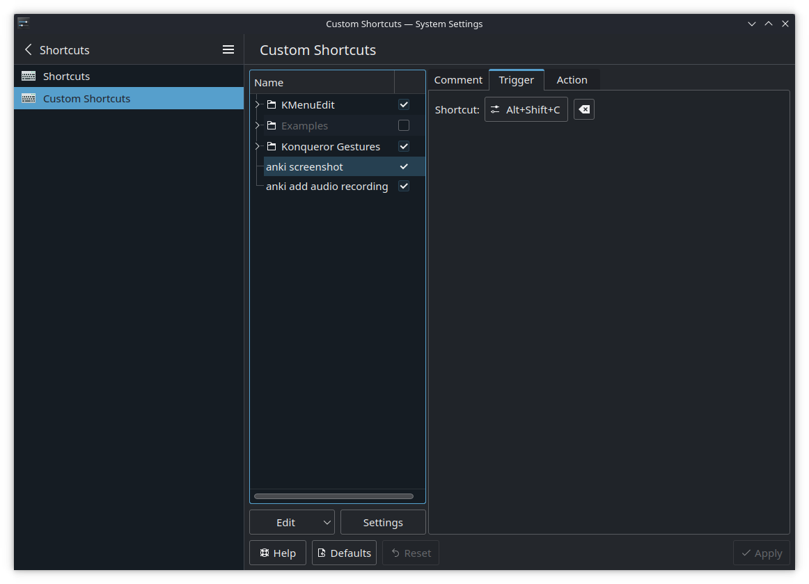

Mining
How to save screenshots to Anki
Save this shell script to your Deck, keep it somewhere you'll remember. Calling this script will capture the active window and save it to the latest Anki note, and display a notification (depending on your notification settings, you may not see it when in-game). With thanks to Xythh whom I got the code snippet from and just made minor edits to work on the Deck.
ss_window.sh
#!/bin/sh
### capture screnshot with spectacle
#ss_dir="/home/deck/Pictures/Screenshots/for_anki"
time=$(date +%Y-%m-%d-%H-%M-%S)
#tmp_file=${ss_dir}/${time}
tmp_file="/home/deck/.var/app/net.ankiweb.Anki/$time"
spectacle --background --activewindow --nonotify --output $tmp_file.jpg
### import to anki. Code taken from https://gist.github.com/xythh/96796571baa850783a0b49f4d325e5b2 with minor edits
ankiConnectPort="8765"
pictureField="Picture"
# This gets your notes marked as new and returns the newest one.
newestNoteId=$(curl -s localhost:$ankiConnectPort -X POST -d '{"action": "findNotes", "version": 6, "params": { "query": "is:new"}}' | jq '.result[-1]')
# if anki connect is running it will return your latest note id, and the following code will run, if anki connect is not running a notification pops up.
if [ "$newestNoteId" != "" ]; then
curl -s localhost:$ankiConnectPort -X POST -d '{
"action": "updateNoteFields",
"version": 6,
"params": {
"note": {
"id": '"$newestNoteId"',
"fields": {
"'$pictureField'": ""
},
"picture": [{
"path": "'"$tmp_file"'.jpg",
"filename": "paste-'"$time"'.jpg",
"fields": [
"'$pictureField'"
]
}]
}
}
}'
notify-send "Saving screenshot to Anki..."
else
notify-send "Ankiconnect is not running, unable to save screenshot to Anki card."
fi
rm "$tmp_file.jpg"
How to record audio to Anki
Save this shell script to your Deck, keep it somewhere you'll remember. Calling this script will start recording audio, calling it again will stop recording and save the audio clip to the latest Anki note. Likewise, with thanks to Xythh for 99% of the code.
record_audio.sh
#!/bin/sh
# Version 1.2
# script taken from https://gist.github.com/xythh/aab65a301a001ef6107cd54a360d4453 with minor edits
# shoutout to https://gist.github.com/Cephian/f849e326e3522be9a4386b60b85f2f23 for the original script,
# https://github.com/xythh/ added the ankiConnect functionality
# # toggle record computer audio (run once to start, run again to stop)
# # dependencies: ffmpeg, pulseaudio, curl
# # for Steam deck: use python (or perl) instead of bc (since bc is not installed by default)
#
# # where recording gets saved, gets deleted after being imported to anki
DIRECTORY="/home/deck/.var/app/net.ankiweb.Anki/"
FORMAT="mp3" # ogg or mp3
# cut file since it glitches a bit at the end sometimes
#CUT_DURATION="0.1"
CUT_DURATION="0"
#port used by ankiconnect
ankiConnectPort="8765"
# gets the newest created card, so make sure to create the card first with yomichan
newestNoteId=$(curl -s localhost:$ankiConnectPort -X POST -d '{"action": "findNotes", "version": 6, "params": { "query": "is:new"}}' | jq '.result[-1]')
#Audio field name
audioFieldName="SentenceAudio"
#if there is no newest note, you either have a complete empty anki or ankiconnect isn't running
if [ "$newestNoteId" = "" ]; then
notify-send "anki connect not found"
exit 1
fi
if pgrep -f "parec"; then
pkill -f "parec"
else
time=$(date +%s)
name="$DIRECTORY/$time"
wav_file="$name.wav"
out_file="$name.$FORMAT"
if ! [ -d "$DIRECTORY" ]; then
mkdir "$DIRECTORY"
fi
notify-send -t 1000 "Audio recording started"
#timeout 1m arecord -t wav -f cd "$wav_file"
# just grabs last running source... may not always work if your pulseaudio setup is complicated
if ! timeout 1m parec -d"$(pactl list sinks | grep -B1 'State: RUNNING' | sed -nE 's/Sink #(.*)/\1/p' | tail -n 1)" --file-format=wav "$wav_file";
then
notify-send "Error recording " "most likely no audio playing"
rm "$wav_file"
exit 1
fi
input_duration=$(ffprobe -v error -select_streams a:0 -show_entries stream=duration -of default=noprint_wrappers=1:nokey=1 "$wav_file")
# output_duration=$(echo "$input_duration"-"$CUT_DURATION" | bc)
output_duration=`python -c "print($input_duration-$CUT_DURATION)"`
# encode file and delete OG
if [ $FORMAT = "ogg" ]; then
ffmpeg -i "$wav_file" -vn -codec:a libvorbis -b:a 64k -t "$output_duration" "$out_file"
elif [ $FORMAT = "mp3" ]; then
ffmpeg -i "$wav_file" -vn -codec:a libmp3lame -qscale:a 1 -t "$output_duration" "$out_file"
else
notify-send "Record Error" "Unknown format $FORMAT"
fi
rm "$wav_file"
# Update newest note with recorded audio
curl -s localhost:$ankiConnectPort -X POST -d '{
"action": "updateNoteFields",
"version": 6,
"params": {
"note": {
"id": '"$newestNoteId"',
"fields": {
"'$audioFieldName'": ""
},
"audio": [{
"path": "'"$out_file"'",
"filename": "'"$time"'.'$FORMAT'",
"fields": [
"'$audioFieldName'"
]
}]
}
}
}'
# opens changed note, comment if you don't want it.
# curl -s localhost:$ankiConnectPort -X POST -d '{
# "action": "guiBrowse",
# "version": 6,
# "params": {
# "query": "nid:'"$newestNoteId"'"
# }
# }'
notify-send -t 1000 "Audio recording copied"
rm "$out_file"
fi
Adding keyboard shortcuts to call the screenshot and record audio scripts
- Open the keyboard shortcut settings from the start menu. (easiest way is to type to find it)
- Click on
Custom Shortcutson the left. - Click
Edit->New->Global Shortcut->Command/URL - Rename it, eg. to "Anki screenshot"
- Edit the trigger to a shortcut key combo (you'll need to map this to a controller button later). I use Alt+Shift+C for screenshot and Alt+Shift+A for audio recording, but this is totally up to you, just pick something unlikely to clash with anything else in-game or with other software. 
- Edit the action to the screenshot script you saved earlier. Put the path of the script in. (Reminder: if you move the file, you'll have to edit this shortcut.)

- Repeat steps #3-6 for the script to record audio.
Mapping the shortcuts and other actions to controller buttons
You'll want to map controller buttons to actions we need when mining. If you're launching the game through Steam, you'll need to set up both the desktop and also game-specific configs, as the latter will apply when the game is in focus.
Desktop controller config: - Alt + tab - mine word (Alt+E) - replay Yomichan audio
Game controller config - you'll need to do this for every game. Map the shortcut triggers you set up earlier: - save screenshot to card - start/stop recording audio and save to card